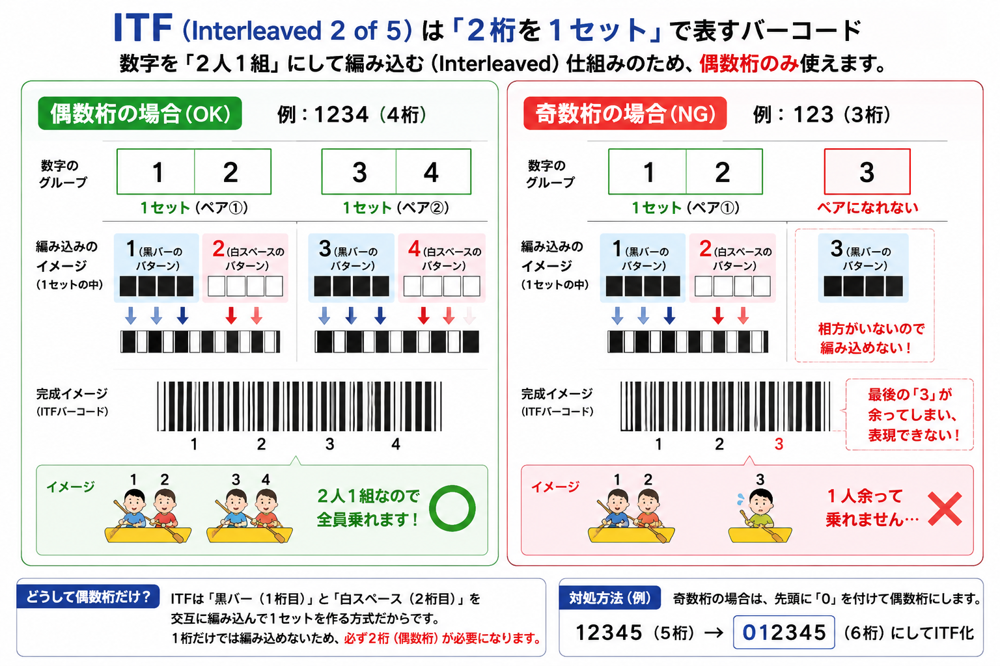

✕ 1PL（自社物流）
荷主が倉庫・トラックを自ら保有して物流を運営する。
固定費が大きい・スケールアップが難しい
Sティア 2巡目で残った △/× 観点だけに絞った図解＋穴埋め（2026-06-10 セッションの取りこぼし）
原価100円の商品を150円で売る店と、原価100円を110円で売る店。仕入れた量（在庫の動き）は同じなのに売上高は違う。在庫の回転の速さは「原価ベースの出庫量」で測らないと正しく比べられない。
| 記号 | 意味 | ポイント |
|---|---|---|
| k | 安全係数（サービス水準） | 欠品率5%水準でk≈1.65。高いほど欠品しにくい分、在庫は増える |
| σ | 需要の標準偏差（ばらつき） | 需要の変動が大きいほど安全在庫が増える |
| √L | 調達期間の平方根 | 調達期間が長いほど安全在庫↑。LT短縮 → √L↓ → 安全在庫↓ |
調達リードタイムが4日から16日に4倍になると、安全在庫は4倍ではなく√4＝2倍にしかならない（増え方が穏やか）。逆に調達を短縮するほど安全在庫を削れる。
| 発注量を増やすと | 発注費 | 保管費 |
|---|---|---|
| 発注量 ↑ | ↓（回数が減る） | ↑（平均在庫が増える） |
正解：イ
正解：ウ 49.5個
正解：ウ 100個
| 消化率 | 意味 | 対応 |
|---|---|---|
| 100%超 | 需要が予測を上回った（売れすぎ） | 追加発注・在庫補充を検討 |
| 100% | 計画通り完売 | 問題なし |
| 100%未満 | 売れ残り（需要が予測を下回った） | 値引き・処分・発注削減を検討 |
消化率＝「計画した分のうち何%を売り切れたか」。通知表で「目標10問中12問解けた＝120%」なら目標超えで嬉しい。小売でも100%超えは「想定より売れた」＝補充シグナル。
売価値入率40%は「売価の40%が利益」という意味。なので原価＝売価の60%（＝1−0.4）。
逆算すると 売価 ＝ 原価 ÷ 0.6。
売価値入率40%のとき、原価値入率＝0.4÷0.6≒66.7%。同じ商品でも分母が違うと数値が変わる。試験は「どちらで聞かれているか」を確認してから計算。
基本の2つの式：
・売価値入率 ＝ 値入額 ÷ 売価／・原価値入率 ＝ 値入額 ÷ 原価
1つのルール：売価 ＝ 原価 ＋ 値入額（裏返せば 原価 ＝ 売価 − 値入額）
※「仕入価格（原価）に利益を上乗せして販売価格（売価）にする」という値入の基本原則。
高いほど良い。アパレルで重要指標。
低いほど良い。万引き・値下・廃棄の合計。
正解：イ
| 変換 | 計算式 | 分母の特徴 |
|---|---|---|
| 売価値入率 → 原価値入率 | 売価値入率 ÷ (1 − 売価値入率) | 1から「引く」 |
| 原価値入率 → 売価値入率 | 原価値入率 ÷ (1 + 原価値入率) | 1に「足す」 |
正解：ウ 1,000 円
正解：エ 約33.3%
入荷した商品を保管エリアを経由せずにそのまま出荷エリアに移し、店舗別に仕分けして出荷する方式。「入荷→保管→ピッキング→出荷」の4ステップを「入荷→仕分け→出荷」の3ステップに短縮できる。
| 方式 | 保管の有無 | 特徴 |
|---|---|---|
| 通常フロー | 入荷→保管→ピッキング→出荷 | 在庫を持つ（DC型） |
| ダブルトランザクション | 入荷→仕分け→即出荷 | 保管なし・TC型に近い考え方 |
物流センター＝商品をためて・分けて・送り出す拠点。試験で問われるのは、たいてい次の3つの「言葉の対（ペア）」。下の図1〜3でこのペアを押さえれば戦えます。
荷主企業が自社の物流機能（倉庫・輸送・在庫管理など）を第三者の物流専門業者に委託する形態。荷主は物流資産（倉庫・トラック）を持たなくてよくなり、コア事業に集中できる。
物流コストを「部門別」ではなく「活動（アクティビティ）別」に把握する手法。入荷・保管・ピッキング・出荷など活動ごとにコストを集計することで、どの作業が高コストかが見えて改善優先度を決めやすくなる。
| 従来の管理 | 物流 ABC |
|---|---|
| 部門別コスト集計 （倉庫部門全体で〇円など） | 活動別コスト集計 （ピッキング1件あたり〇円・入荷1パレット〇円） |
| どの作業が高コストかわからない | 改善ターゲットを特定できる |
出庫頻度の高い商品（A品目など）を倉庫の出入口に近い場所・下段・手前に配置し、ピッキングの移動距離を最小にする原則。頻繁に動かすものほどアクセスしやすい場所に置く。
リードタイムが4日から1日に短縮されると、安全在庫は√4→√1＝2倍→1倍に半減できる。物流の改善は単なる配送コスト削減だけでなく、在庫そのものを減らす効果も持つ。
| 種類 | 誰が付けるか | 有効範囲 | 用途 |
|---|---|---|---|
| ソースマーキング | メーカーが製造・出荷段階で印刷・添付 | 流通全体で共通利用可能 | 一般消費財のほとんど（JAN コード） |
| インストアマーキング | 小売店が独自にラベルを貼る | その店舗内のみ有効（他社では使えない） | 生鮮品・量り売り・惣菜など |
「ソース（Source）」＝商品の源（製造段階）でバーコードを付ける。だからメーカーが印刷する。インストア（In-store）は「お店の中で」付ける。名前から判断できる。
インストアマーキングに使うJANコードの先頭2桁は 「02」または「20〜29」 が国際的に割り当てられている。POSシステムがこの番号を見て「これは店内限定コードだ（他店では使えない）」と判断する。
| 先頭桁 | 種類 | 用途 |
|---|---|---|
| 02、20〜29 | インストア用プレフィックス | 店内限定品（生鮮・量り売り）に小売店が付与 |
| 49、45（日本） | ソース用プレフィックス | メーカーが付与する標準JANコード |
| 種類 | 付ける主体 | 有効範囲 |
|---|---|---|
| ソースマーキング | メーカー（製造・出荷段階） | 流通全体で共通 |
| インストアマーキング | 小売店（店舗） | その店舗内のみ |
| コード | 桁数 | 貼る場所 | 用途 |
|---|---|---|---|
| JAN8（短縮タイプ） | 8桁 | 小さな商品の表面（個品） | 消費者向け・レジでスキャン |
| ITF | 14桁（偶数桁） | 段ボール外装（集合包装） | 物流・在庫管理用（レジでは読まない） |
JAN8 ＝ スペースが少ない小さい商品（口紅・乾電池など）に使う短縮バーコード。
ITF ＝ Interleaved Two of Five。段ボール箱の側面に印刷される物流用バーコード。偶数桁のみ対応（14桁が標準）。
GS1-128（旧UCC/EAN-128）は、ロット番号・有効期限・シリアル番号・重量など多様な情報を1本のバーコードに格納できる。スーパーのレジでスキャンするのはJANコード。GS1-128は物流現場・製薬・食品トレーサビリティ向け。

| 項目 | 内容 |
|---|---|
| フルネーム | Interleaved Two of Five |
| 桁数 | 偶数桁のみ（2桁1セットで表現）。標準は 14桁 |
| 使用場所 | 段ボール箱などの集合包装（外装） |
| 構成 | インジケータ（1桁）＋GS1事業者コード＋商品コード＋チェックデジット |
ITF（Interleaved Two of Five）は「2桁を1セット」にして交互に組み合わせる方式。2桁×7セット＝14桁が標準。奇数桁では最後の1桁が余って対になれないため使えない。
| コード | 貼る場所 | 主な用途 |
|---|---|---|
| JAN8 | 小さい商品の表面（個品） | 消費者向け・レジ |
| ITF | 段ボール外装（集合包装） | 物流・在庫管理 |
| GS1-128 | 物流現場・企業間 | ロット番号・有効期限など追加情報の格納 |